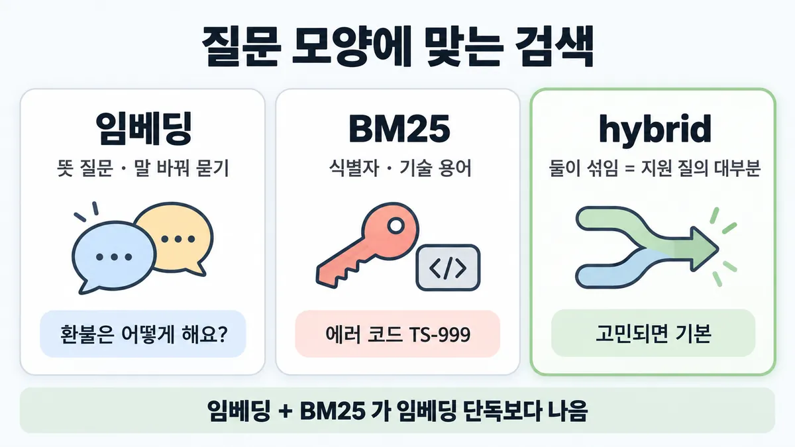
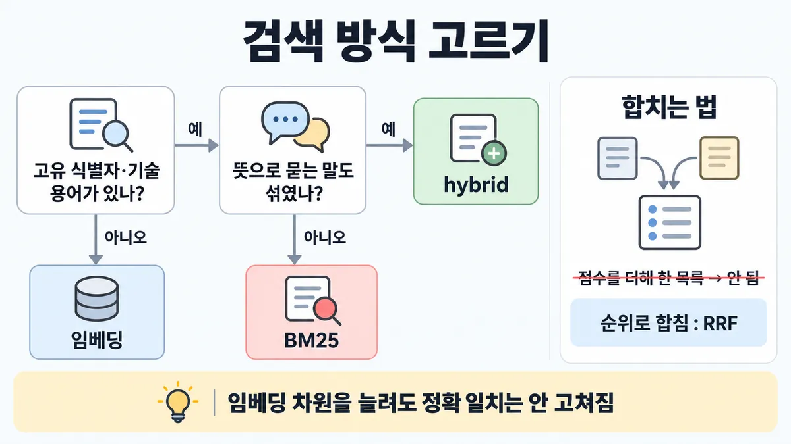

◆ 임베딩 vs BM25 vs hybrid
표시가 없는 문장은 공식 문서에서 확인한 내용이에요. 다른 표시는 읽는 법
왜 배우나 — 시험이 요구하는 것
시험 목표 3.6 데이터 모양에 맞는 검색 · D3 연결 19%Apply retrieval strategies matched to data shape and query pattern
이 개념으로 푸는 판단 (할 수 있어야 하는 것)
- 3.6① 에러 코드 "TS-999" 로 물으면 의미 검색이 엉뚱한 문서를 준다 — 무엇을 더하나? — 데이터 모양에 맞는 검색 (dense vs BM25 vs hybrid)
- 3.6② '반품 기한은?'·'A·B 요금제 차이'·'내 주문 배송사 규정은?' 이 섞여 온다 — 검색을 하나로 통일하나? — 질의 패턴에 맞춰 검색 노력 조절 (hybrid+리랭킹 기본 · 분해 · 다단계 · 라우팅 · 범위 제한)
한눈에


ELI5
잃어버린 물건을 찾는 두 친구가 있어요.
- 한 친구는 "비슷한 것"을 잘 찾아요. "빨간 공"이라 하면 빨간 풍선도 가져와요.
- 다른 친구는 "이름표가 똑같은 것"만 찾아요. 이름표 번호는 절대 안 틀려요.
- 둘을 같이 보내고, 둘 다 찾아온 걸 먼저 믿으면 제일 잘 찾아요.
- 이 쪽은 "언제 어느 친구가 더 필요한가"를 모아 둔 곳이에요.
개념 설명
원리
임베딩 (의미 검색 = semantic retrieval)
- 글의 뜻을 숫자 목록으로 바꿔, 질문과 뜻이 가까운 chunk(조각)를 찾음.
- 말을 바꿔 물어도 찾음. 대신 정확한 문자열(에러 코드·사고 번호)을 놓칠 수 있음 — "에러 코드 일반" 문서를 주고 TS-999 는 못 찾는 식.
BM25 (단어 일치)
- TF-IDF 를 다듬은 순위 함수. 드문 단어일수록 무게가 큼 → 고유 ID·기술 용어에 강함.
- 대신 단어가 다르면(질문 "돈 돌려받기" / 문서 "환불") 못 찾음.
hybrid
- 둘을 따로 돌려 순위로 합침(rank fusion) + 중복 제거 → 상위 K 를 프롬프트에.
- 점수 체계가 달라 점수를 그냥 더하면 안 됨. 순위 기반 RRF 가 흔함 : 점수 = Σ 1/(k + 순위).
- 공식 실험 결론 : 임베딩 + BM25 가 임베딩 단독보다 나음. 여기에 chunk 문맥 붙이기·리랭킹을 쌓으면 이득이 더 쌓임 (■ RAG 파이프라인).
핵심 질문 두 개
- 틀리는 질문들의 공통점이 "정확한 문자열"인가, "뜻"인가?
- 질의가 섞여 있는가? (섞였으면 hybrid)
규칙과 판단


갈림길
질문 모양 [3.6①]
hybrid
둘이 섞임 = 실제 지원 질의 대부분 → hybrid
BM25
정확한 단어 일치
임베딩
의미 관계를 잘 잡음 · 공식 결론 : 임베딩 + BM25 가 임베딩 단독보다 나음 → 고민되면 hybrid 가 기본
정확 일치를 놓칠 때 [3.6①] [3.6②]
안 고쳐짐
정확 일치를 못 하는 게 원인이라 차원을 늘려도 안 고쳐짐 업계 일반 공식 문장은 없고 방향만 같음
검색 단계를 안 고침
틀린 chunk(조각)를 받으면 큰 모델도 틀림 업계 일반
hybrid
공식은 오래된 BM25 를 더하라고 함
합치는 법 [3.6②]
안 됨
두 검색의 점수 체계가 달라 그냥 이어붙이면 안 됨 (Skilljar)
순위로 합침
두 검색의 점수 체계가 달라 그냥 이어붙이면 안 됨 → 순위로 합침. 예 = RRF, 점수 = Σ 1/(k + 순위), k 는 흔히 60 (Skilljar — docs 는 "rank fusion" 이름만)
규칙 원문 갈림 기준 (갈림길로 그린 규칙)
갈림 기준
질문과 데이터의 모양
- 뜻으로 묻는 질문 · 말을 바꿔 묻는 질문("환불은 어떻게 해요?") → 임베딩(의미 검색). 의미 관계를 잘 잡음
- 고유 식별자 · 기술 용어(에러 코드 "TS-999", 사고 번호 등) → BM25(정확한 단어 일치). 임베딩은 "에러 코드 일반" 문서를 주고 정확한 TS-999 를 놓칠 수 있음
- 둘이 섞임 = 실제 지원 질의 대부분 → hybrid. 두 검색을 따로 돌려 rank fusion 으로 합치고 중복 제거
공식 결론 : 임베딩 + BM25 가 임베딩 단독보다 나음 → 고민되면 hybrid 가 기본
합치는 법 : 두 검색의 점수 체계가 달라 그냥 이어붙이면 안 됨 → 순위로 합침. 예 = RRF, 점수 = Σ 1/(k + 순위), k 는 흔히 60 (Skilljar — docs 는 "rank fusion" 이름만)
- hybrid 위에 리랭킹·chunk 문맥 붙이기를 쌓는 건 ■ RAG 파이프라인 · 규칙 ②③
더 깊이 : 판단 규칙 · 상황 변수 (설명)
판단 규칙
| 조건 | 답 | 근거 |
|---|---|---|
| 임베딩만 쓰는데 에러 코드·ID 질문에서만 틀림 | BM25 를 더해 hybrid | contextual-retrieval "they can miss crucial exact matches" · TS-999 예 |
| 고유 식별자·기술 용어 질의 | BM25 가 강함 | "particularly effective for queries that include unique identifiers or technical terms" |
| 실제 지원 질의(뜻 질문 + 코드 질문이 섞임) | hybrid 가 기본 | "Embeddings+BM25 is better than embeddings on their own" |
| 두 검색 결과를 합쳐야 함 | 점수 말고 순위로 합침(rank fusion, 예 RRF) + 중복 제거 | Skilljar 287766 |
| hybrid 뒤에도 순위가 아쉬움 | 리랭킹·Contextual Retrieval 을 쌓음 | ■ RAG 파이프라인 |
상황 변수
| 변수 | 값 | 답 쪽 | 등급 | 근거 |
|---|---|---|---|---|
| 틀리는 질문 모양 | 코드·ID·SKU 등 정확 문자열 | BM25 추가 | 판단 규칙 1 | |
| 틀리는 질문 모양 | 같은 뜻을 다른 말로 물음 | 임베딩 필요 | Skilljar 287767 | |
| 질의 구성 | 섞임 | hybrid | 판단 규칙 3 | |
| 질의 구성 | 전부 "주문번호 X 의 상태" 같은 키 조회 | 검색이 아니라 조회 도구(API·DB) 쪽 | 업계 일반 | 뒤집히는 때 2 |
| RRF 의 k | 작음(예 1) / 큼(예 60) | 작으면 한쪽 1위를 우대, 크면 양쪽에 다 나온 chunk 를 우대 | 계산 | 뒤집히는 때 1 |
| 지식 크기 | 20만 토큰 미만 | 검색 자체가 필요 없을 수 있음 | ◆ RAG vs full context |
연습 문제
사내 지원 검색(retrieval)이 임베딩만 쓴다. "환불은 어떻게 해요?" 같은 말을 바꿔 묻는 질문뜻 질문은 잘 찾는데, 에러 코드 "TS-999" 가 든 질문식별자에는 에러 코드 일반 문서만 돌려준다. 두 질문은 섞여서 들어온다. 팀은 임베딩 차원을 늘리자고 한다. 검색을 어떻게 바꿀까?
시험 대비
함정
- "임베딩 차원을 늘린다" → 정확 일치를 못 하는 게 원인이라 차원을 늘려도 안 고쳐짐 업계 일반 공식 문장은 없고 방향만 같음
- "더 큰 생성 모델로 바꾼다" → 검색 단계를 안 고침. 틀린 chunk 를 받으면 큰 모델도 틀림 업계 일반
- "문서를 전부 컨텍스트에 넣는다" → 검색 문제를 우회할 뿐. 지식이 20만 토큰 미만일 때만 맞는 답 → ◆ RAG vs full context
- "벡터(새 기술)가 키워드(옛 기술)를 대체한다" → 공식은 오래된 BM25 를 더하라고 함
- "두 검색 점수를 더해 한 목록으로" → 점수 체계가 다름, 순위로 합침 (Skilljar)
신호
"While embedding models excel at capturing semantic relationships, they can miss crucial exact matches."
"It's particularly effective for queries that include unique identifiers or technical terms."
"Combine and deduplicate results from (3) and (4) using rank fusion techniques;"
"Embeddings+BM25 is better than embeddings on their own;"
"Merging results from different search methods isn't as simple as just concatenating lists." (Skilljar)
더 깊이 : 뒤집히는 때 · 오답 재료 (설명)
뒤집히는 때
1. RRF 의 k 에 따라 1위가 바뀜
- 조건 : chunk P 는 임베딩 1위인데 BM25 목록엔 없음. chunk Q 는 임베딩 4위 · BM25 4위.
- 계산 :
- k = 1 : P = 1/2 = 0.500 · Q = 1/5 + 1/5 = 0.400 → P 가 1위.
-
k = 60 : P = 1/61 ≈ 0.0164 · Q = 1/64 + 1/64 ≈ 0.0313 → Q 가 1위.
-
판단 : k 가 크면 순위 차이가 눌려 "양쪽에 다 나온" chunk 가 올라감. 식별자 질문처럼 한쪽(BM25)만 정답을 잡는 경우가 많으면 이 설정이 결과를 바꿈 → 내 질의로 eval.
- 등급 : 계산 (식·k=60 은 Skilljar, docs 는 "rank fusion" 이름만)
- 근거 : Skilljar 287766 · contextual-retrieval
2. 질의가 전부 정확한 키 조회
- 조건 : "주문 A-7731 배송 상태" 처럼 키가 있고 답이 구조화된 데이터에 있음.
- 판단 : 문서 검색(임베딩·BM25)보다 주문 조회 도구로 가져오는 게 맞음. RAG 는 문서 지식용.
- 등급 : 업계 일반 (공식 RAG 글에 이 구분 없음)
- 근거 : — (도구 쪽은 ■ 도구 설계)
3. 식별자가 전혀 없는 질의만 옴
- 조건 : 질문이 모두 "어떻게 하나요" 류.
- 판단 : 임베딩 단독도 쓸 만해 보이지만, 공식 결론(여러 데이터셋 종합)은 임베딩 + BM25 가 단독보다 낫다는 것 → hybrid 를 빼는 쪽 근거는 약함. 잘 안 뒤집힘.
- 등급 : (공식 결론) · 이 질의 분포에서의 차이 크기는 미해결
- 근거 :
오답 재료
| 오답 | 왜 끌리나 | 왜 틀리나 | 등급 | 근거 |
|---|---|---|---|---|
| "임베딩 차원을 늘린다" | 벡터 품질을 올리면 될 것 같음 | 원인은 정확 일치를 못 하는 방식. 차원을 늘려도 문자열 일치는 안 생김 | 업계 일반 | (방향) |
| "더 큰 생성 모델로 바꾼다" | 모델이 똑똑하면 답도 맞을 것 같음 | 틀린 chunk 를 받으면 큰 모델도 틀림. 검색 단계를 안 고침 | 업계 일반 | ■ RAG 파이프라인 |
| "문서를 전부 컨텍스트에 넣는다" | 검색이 필요 없어짐 | 지식이 크면 안 들어감. 20만 토큰 미만일 때만 맞는 답 (그 판단은 다른 카드) | ◆ RAG vs full context | |
| "벡터 검색이 키워드 검색을 대체했다" | 새 기술이 옛 기술을 이긴다는 습관 | 공식은 오래된 BM25 를 더하라 함 | ||
| "두 검색 점수를 더해 한 목록으로" | 간단해 보임 | 점수 체계가 달라 순위로 합침 | Skilljar 287766 "isn't as simple as just concatenating lists" | |
| "BM25 만으로 충분 (정확해서)" | 코드 질문에서 잘 맞음 | 말을 바꾼 뜻 질문을 놓침 | Skilljar 287767 "both search methods have complementary strengths" |
참고
개념
출처
- 가이드 목표 3.6 공식 시험 가이드 v1.0
- Contextual Retrieval 글
- Skilljar API 287767
- 287766
상태
- 업계 일반 2줄(함정 차원·큰 모델)
미해결
- RRF 의 k 값 권장은 docs 에 없음(Skilljar 가 "흔히 60"이라고만 함).
- 식별자 질문 비율이 얼마일 때 hybrid 이득이 커지는지 공식 숫자 없음 — 공식 숫자는 맥락 임베딩 + 맥락 BM25 의 여러 도메인 평균(5.7% → 2.9%)뿐이고, 맥락 없는 기본 BM25 만 더한 이득은 따로 안 나옴.
- 목록 3.6① "차원 늘리기는 오답" : 공식 문장이 아니라 원리에서 나온 추론 → 업계 일반으로 둠(목록도 같은 판정).